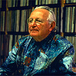

In 1958 I left Rice after 2 years to join him in Bartlesville, and then Kansas City. The creative world was new to me, and much more interesting at that time than school, and I planned to remain in mathematics but learn more about creating.
 This picture was taken in the Price Tower by Joe D. Price who was making a time lapse movie of BG creating a painting. I was off to the side.
As I began to be exposed to this world new to me it was nice to learn that I could not only enjoy it and think creatively, but also could be part of and contribute to the architectural work.
As I began to contribute more and more to the work of actually getting buildings constructed (which meant in particular trying to help BG meet budgets) and the work involved travelling to jobsites without him, the issue of "we will have to check with thw great man" began to arise. It turned out that a relatively easy solution was to have my name on the construction drawings. There would clearly never be any doubt whether the creativity was his, and the original conception of how things were to be was totally his, I had no claim in any way to be an architect, but he had learned that meant I would never try to express myself creatively in the work, and had a certain amount of common sense.